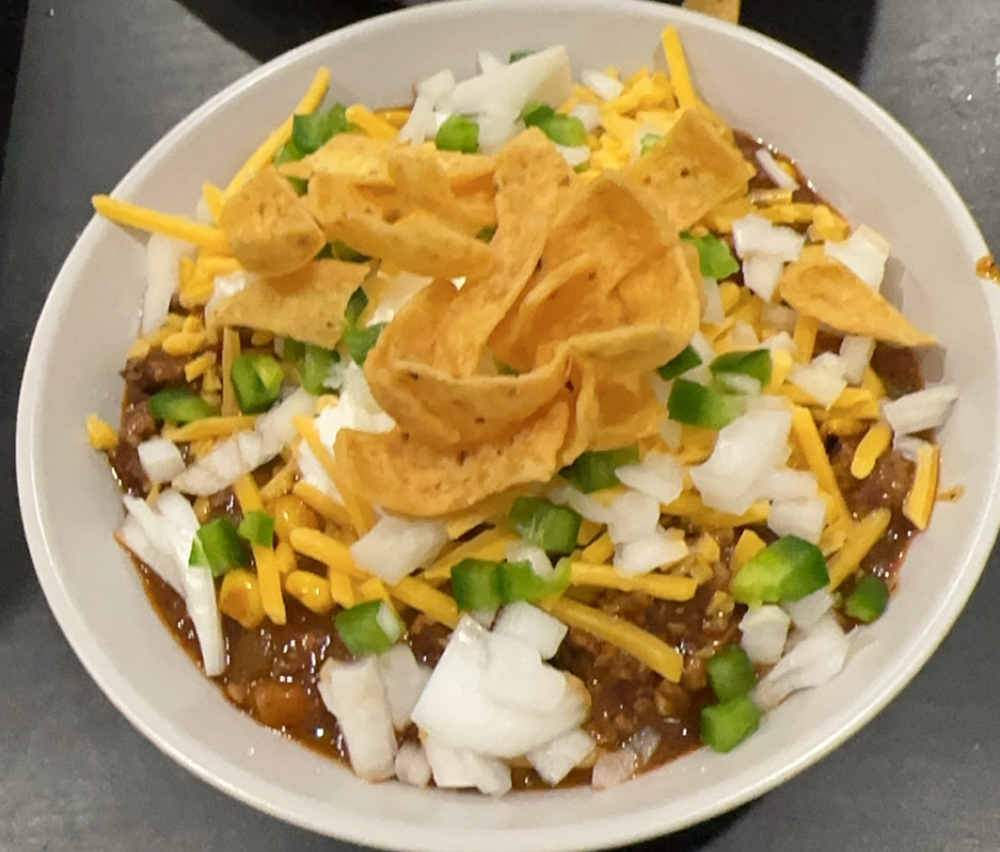

Texas Chili
Home

Servings: 6-8
Prep time: 20 min
Cook time: 1.5-2 hours
Description
Afordable, spicy, meaty, and quick.
Nothing comaperes to this easy to make chili recipe.
The recipe utilizes some of the best tricks to replicate amazing chili with no hassle.
This recipe only takes around 2 hours and has all the same flavors as a recipe that takes all day long.
The recipe is extremely forgiving, so feel free to change accoring to your own preferences.
Ingredients
- 1 pound ground beef
- 1 pound spicy breakfast sausage
- 2 jalapenos, finely chopped
- 1 bell pepper, chopped
- 1 yellow onion, diced
- 1 (14oz) can of fire roasted tomatoes
- 1 (8oz) can tomato sauce
- 1 can hatch green chilis
- 1 can chipotles in adobo
- 3-5 cloves of garlic, minced
- Box of Carroll Shelby's Texas Chili Mix
- 1 can of beer
Steps
- Start by preparing your vegetables. Dice the onion, chop the bell pepper and jalapeños, and mince the garlic. From the can of chipotles in adobo, chop one or two peppers depending on your preferred spice level, and reserve a teaspoon or two of the adobo sauce for added smokiness.
- Next, in a large pot or Dutch oven, add the ground beef and spicy breakfast sausage over medium-high heat. Cook the meat until it is fully browned, breaking it up with a spoon as it cooks. This should take about 7 to 10 minutes. If there is a large amount of grease, carefully drain the excess fat from the pot.
- Once the meat is browned, add the diced onion, chopped bell pepper, jalapeños, and minced garlic to the pot. Stir everything together and cook for about five minutes, or until the vegetables begin to soften and the onions turn translucent.
- After the vegetables are softened, stir in the fire roasted tomatoes, tomato sauce, Hatch green chiles, the chopped chipotles, and a spoonful of the adobo sauce. Mix well to combine all the ingredients evenly.
- Open the box of Carroll Shelby's Texas Chili Mix and add the main chili seasoning packet to the pot. If you prefer your chili spicy, add some or all of the cayenne pepper packet as well. Add salt using the included salt packet or to taste. Reserve the masa flour packet for later in the cooking process.
- Pour the can of beer into the chili mixture and stir to combine. Bring the mixture to a boil over medium-high heat, then reduce the heat to low and let it simmer uncovered. Allow the chili to simmer for about 1 to 1.5 hours, stirring occasionally to prevent it from sticking and to help the flavors develop.
- If you would like a thicker chili, mix the masa flour from the kit with a few tablespoons of water in a small bowl to form a slurry. Stir the slurry into the chili during the last 10 to 15 minutes of cooking and allow it to simmer until the texture thickens to your liking.
- Finally, taste the chili and adjust the seasoning as needed. You can add more salt, chili powder, or adobo sauce if desired to enhance the flavor or heat.
- Serve the chili hot, topped with your favorite garnishes like shredded cheese, sour cream, chopped green onions, or cilantro. It pairs wonderfully with cornbread, tortilla chips, or a bowl of rice.